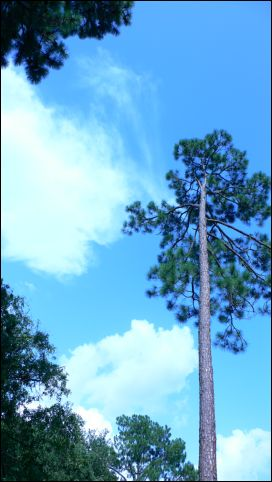
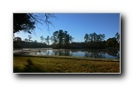
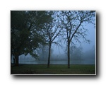
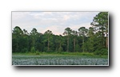
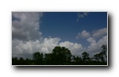
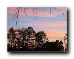
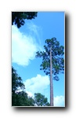

|
禪修社區禪修社區：自然景觀 | 禪堂講堂 | 社區設施 | 步道與行者 | 社區生活 |
|
 湖光天色在德州休士頓地區的氣候條件下，地闊天高是雲朵的最佳舞台。不論是春夏秋冬，或是陰晴早晚，都會有令人眼睛為之一亮的景象。這些多變豐富的天光雲影，正隨時等待有心人的目光與之相會。 蓮花湖面積約 3 萬平方米，在百千綠樹的圍繞中，出落著沈靜的一泓湖水。初見之時，綠蔭水色即帶給人安詳的感受。而駐足蓮花湖畔，更頓覺天空格外明亮，彷彿有點點金光從天而降。只要來到這裡，就能活生生地感受到天地間的莫大祝福。 |
自然景觀       |
Copyright © 2000-2026 Is Zen Center All Rights Reserved |